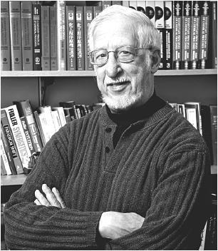

第17章 参加考试
考试本身就是效果非凡的学习经历
虽然前面已经提过，但还是有必要把下面这句话“大写加粗”重申一遍：考试本身就是一种效果非凡的学习经历。这意味着，你投入考试的一切努力有着举足轻重的意义，包括一些基础小测试，如测试自己能否回想起知识点，还有备考时对解题能力的测试。在学习内容相同的前提下，如果比较同样一个小时的学习或考试，你会发现用这一个小时来考试能学得更多，记得更牢。似乎考试有让人精神集中的美妙效果。
几乎本书中我们谈及的所有内容，都是为了让读者直接而自然地认识考试这个学习过程——它只是一般学习步骤的一个延伸。那我们就直奔主题，讲讲本章乃至本书的核心主题之一——用于检查考前复习是否到位的检查清单。
备考检查清单

理查德·菲尔德（Richard Felder）教授是工程学教育界的一个神话——他在帮助全球学生学好数学和科学方面的贡献，可以说不亚于或者说甚至胜过20世纪其他任何一位教育工作者。[1]菲尔德教授采用的一个帮助学生最简单或许也是最有效的技巧，是对考试成绩不满意的学生，他会在他们备忘录里写罗列一些内容。[2]
你们很多人都跟自己的老师说过，上次考试的成绩远低于自己对学习材料理解的真实水平。还有些人问过，要怎么做才能避免下次考试重蹈覆辙。
我来问你几个问题，看看你是如何准备考试的。一定要尽可能地如实回答。如果你对大部分问题的回答都是“否”，那么你的考试成绩不理想也不奇怪。如果下次考完试，你还有很多回答都是“否”，那你的成绩不理想就更不足为奇了。如果你大部分的答案都是“是”，而考试分数却很低，那肯定有别的原因。跟自己的导师或咨询顾问见个面，看看能否找出原因所在，或许是个好主意。
你会注意到，有些问题会假设你是和同学合作完成的作业——你或是把自己独立得到的答案跟别人比较，或实际上就是和他人一起做出的答案。两种做法都可以。实际上，如果你是完全独自一个人学习，而考试成绩又不理想的话，我会强烈建议你在下次考试前，找一两个学伴一起学习或做作业。（不过，对待这种做法也要小心，因为要是你光看别人而自己不动手，那么对你反而可能弊大于利。）
可一旦你填好下面这个检查清单，那么“我该如何备考”的问题就迎刃而解了。你该做的就是：
尽你所能对以下大部分问题做出肯定回答。
备考检查清单
只有经常做到以下描述的事情，才能回答“是”（偶尔做到或从没做到选“否”）。
家庭作业
___是___否 1.你有没有尽力去理解课本内容？（带着目的去找相关例题不算在内。）
___是___否 2.你是否有跟同学一同解决作业问题，或者至少跟他们核对过答案？
___是___否 3.你在跟同学合作之前，有没有先试着自己大致写出每道题的解法？
备考
你记下的回答中“是”越多，说明你复习得越好。如果你的回答里有两个及以上的“否”，那你可能要认真考虑在下次考试前改变一下复习策略。
___是___否 4.你是否积极地参与了家庭作业的小组讨论（贡献点子，提出问题）？
___是___否 5.当你遇到困难的时候，有没有请教老师或助教？
___是___否 6.你交作业的时候，是否完全理解了所有问题的答案？
___是___否 7.当不明白家庭作业的题目解法时，你有没有在课上提问寻求解释？
___是___否 8.如果你有学习指导手册，你有在考试前仔细通读过一遍吗？确定手册上的所有题目都会做了吗？
___是___否 9.你有没有试过快速列出解题纲要，而不在基础计算上花时间？
___是___否 10.你是否有和同学一起复习过学习指导手册和问题，并互相提问？
___是___否 11.如果考前有复习课，你是否参加过，并在课上提出任何你不太确定的问题？
___是___否 12.你在考前有没有保证合理的睡眠？（如果这个问题的答案是“否”的话，那前面1~11的答案可能都不重要了。）
___是___否 总分
由难入简法
应对数学和科学考试，学生常被传授的经典策略是，从最简单的题目入手。这个策略是基于这样一种观念：当你做完了相对简单的题目，就会有信心面对更难的题目。
这个策略对一些人有效果，不过这主要因为，不管什么策略总会有它的适用人群。然而不幸的是，对于大多数人来说，这个策略带来的是反作用。难题通常更耗时，这意味着你更应该先做这些难题，而且难题也迫切需要发散模式来发挥创造力。但是想要进入发散模式，你就别紧盯着那些最想去解决的难题！
那要怎么办呢？是先做简单题目，还是先做难题？
答案是先从难题入手，但是马上跳回简单题目。我来解释一下。
试卷一发下来，先快速浏览一遍，对试卷内容有个大致印象。（对任何考试你都应该这么做。）放眼去找看起来最难的题目。
那么，开始做题时，就先做看起来最难的那道。不过要做好准备，一旦你发现自己已经一两分钟没有进展，或者感觉可能想偏了，就要立刻抽身出来。
这个做法不是一般的好用。“由难入简”法会把首个最难题目装进你的大脑，然后转移注意力。靠这两步就能让发散模式开始运转了。
如果首道难题进展不顺，那就跳到下一道简单的题目，把它做出来，或能做多少是多少，之后接着做另一道看起来很难的题目，并努力取得一点点进展。一旦感到陷入了困境或停滞不前，就再换一道简单些的题目去做。
我跟我的学生讲，忧虑的作用有好有坏。适当的忧虑能赋予你动力，帮你集中注意力，而不当的忧虑只会浪费精力。
——鲍勃·布拉德肖（Bob Bradshaw）
奥龙尼大学数学教授
当你回头去看那些较难的题目，你往往会开心地发现，下一步解法或是一些解题步骤变得更加明晰了。你也许无法一口气做完整道题，但在换到另一道能有所进展的题目之前，你至少可以在这道题上更进一步。
从某种角度说，运用了这种考试策略，你就会像一位高效的厨师。等着牛排煎熟的同时，你可以快速切好番茄做配菜，然后给汤调个味，再去翻一翻煎得嗞嗞响的洋葱。由难入简法通过让大脑各个部分同时处理不同的想法，来提高大脑的利用效率。[3]
在考试中运用由难入简法，能够保证你至少每道题都做上一点。这种方法也能有效防止你陷入思维定式，即一直在错误的思路中徘徊不前，因为这个方法会让你有机会多次多角度审视问题。如果你的老师会根据步骤给分，这个方法就更有用了。
这个方法唯一的难度在于，一旦你发现已经过去了一两分钟却仍止步不前，就必须足够自觉地从这道题目中抽身。对于大多数学生来说，这轻而易举。但对于有些人，则需要一定的自律和意志力才办得到。无论如何，你现在应该非常清楚地意识到了，用错地方的坚持可能会给数学和科学的学习造成不必要的困难。
这或许也就说明了，为什么有些考生前脚一走出考场，后脚就想到了答案。当他们放弃继续做题，注意力就被转移了，由此产生出发散模式所需的一点点牵引力，让发散模式得以运转，并把答案反馈给你。不用说，为时已晚。
有时人们会担心，要是先给一道题开个头，然后又抽身转去做别的题，这样也许会乱了考试的阵脚。可这对于大部分人来说都不是问题，毕竟一名厨师是要学会把各种菜同时做好端上桌去的。但如果你还是不放心本策略对你的效果，你可以先拿作业题试试。
要注意，由难入简法在某些情况下是不适用的。如果老师给难题设置的分值很低（有的老师就喜欢这么做），你最好还是把主要精力放在其他题目上。有一些上机资格考试是不让回头检查的，那么如果这时候遇到难题，最好的办法，就是从腹部深吸一两口气（记得也要呼出来），然后尽力而为吧。而如果你在考前复习得不充分，那就无计可施了。要尽量把简单题目的分数都拿到手。
克服考前恐惧
我一直跟我的学生说要敢于直面恐惧。通常来说，你最大的恐惧就是怕自己的分数达不到要求，从而影响自己选择的职业道路。如何克服这种恐惧？很简单。制订一个计划B，作为备选职业。一旦为最坏的意外都备好了对策，你会惊讶地发现恐惧感开始减退了。
努力学习，一直奋战到考试来临，然后就顺其自然吧。对自己说：“嗯，让我看看自己能答对多少道。再不济我也还有别的职业选择呢。”这样做有助于释放压力，能让你发挥得更好，也更容易向首选目标靠拢。
——特蕾西·马格兰（Tracey Margrann）
鞍峰学院生物科学教授
考试中出现焦虑的原因及对策
如果你在考试时总觉得压力过大，请记住，在压力下人的身体会释放出一些化学物质，比如皮质醇，它会导致你掌心出汗，心跳加速，胃里就像打结一般。不过有意思的是，研究发现，一切的关键在于你如何解读这些症状，也就是你如何向自己解释压力从何而来。如果你转变一下想法，不去想“我好怕这次考试啊”，而是想“这次考试让我很兴奋，我要做到最好”，你的表现可能就会大有改观。[4]
对于考试恐慌人群来说，还有一个好建议就是把注意力暂时转移到自己的呼吸上来。放松腹部，把手放在上面，慢慢深吸一口气。你应感到手在向外移动，甚至同时感到整个胸腔如一个膨胀的桶在向外扩张。
通过这样的深呼吸，可以把氧气输送到大脑的关键区域。它示意着“一切正常”并帮你冷静下来。不过，不要到考试那天才开始这样深呼吸。你要是能提前几周开始练习，每天随意花上一两分钟就足够了，到考试的时候，你就能更加轻易地进入这种呼吸模式。（要记住，常练不忘！）发试卷前，在紧张的最后时刻里，进入这种深呼吸模式会极有帮助。（没错，你要是有兴趣，可以找到大量的相关手机应用来帮助自己。）
另外一个技巧和正念（mindfulness）有关。[5]这个技巧需要你学会区分两个概念：一种是自然产生的想法（我下周有个重要的考试）；另一种是随之而来的情感投射（如果我不及格，我就会被逐出本专业，那时我该如何是好啊）。这些附随其后的想法，是发散模式投射出的浮光掠影，甚至只需简单练习上几周，学着重新看待这些念头和感觉，把它们看作单纯附随的情感投射，似乎就能帮助你的大脑放松和平静下来。比起纯粹努力去遏制这种干扰性念头，改变自己的应对方式效果会好更多。学生若能花上几周来练习这种正念，将会有更好的考试表现，受到那些念头的干扰也会减少。
现在你就能理解了，为什么考试中最难的题目等最后才做会造成麻烦。因为当你所剩时间越来越少，压力会越来越大，却恰恰还面临着最难的题目。当压力剧增，你会努力聚精会神，想着集中注意力就能够解决问题了，然而你的专注反而会让发散模式无法开始工作。
结果呢？就是“分析导致瘫痪”[6]。[7]而“由难入简”法有助于避免这种情况的发生。
对“猜”选择题答案和模拟考试的几点提示
我给学生考选择题的时候，时常发现他们还没完全理解题干要求，就断然开始读选项了。我建议他们先把选项遮起来，尝试回忆知识，这样就可以先靠自己算出答案。
每当我的学生跟我抱怨，说模拟考试比真实考试要简单太多太多的时候，我都会问：是什么因素混淆了视听，使两者显得如此不同？你做模拟题的时候，是不是在家里轻轻松松听着音乐？或是跟同学一起做的卷子？还是没有时间限制？是手边有现成的题解或课堂材料吗？这些状况和拥挤考场里争分夺秒的情景完全不能相提并论。我鼓励那些有考试恐惧症的人，带着模拟试卷去另一个教室做（到你能溜进去的大课，神不知鬼不觉地混在教室后排）。
——苏珊·拉吉娜·赫伯特（Susan Sajna Hebert）
湖首大学心理学教授
考前的最后把关
考前一天，要快速浏览复习材料，重温一遍。在第二天的考试里，专注模式和发散模式的“肌肉”对你都必不可少，所以前一天不要太拼自己的脑力。（这就像你不会在马拉松前一天去参加10英里[8]赛跑是一个道理。）如果大考前一天自己似乎难以投入刻苦学习，也不要感到愧疚。如果你已经准备得当，会有这样一种自然反应：你会下意识收敛能量，为第二天保存脑力。
在考试过程中，也别忘了，大脑会蒙骗你，让你以为自己做的题就是对的，即使事实并非如此。这意味着，只要条件允许，你应该跳过它，转移一下注意力，然后从全局视角二次检查自己的答案，问自己：“这样解答真的合理吗？”通常来说，解题方法都不止一种，换个检查问题的视角会给你一个验证答案的绝好机会。
如果除了按自己的逻辑推导就没有别的检查办法，要记住，甚至最优秀的数学、科学、工程学学生也曾在一些简单问题上犯错，比如漏掉了负号，加错了数字，或“忘掉原子”等。只要你尽可能把这些小错误检查出来就好。在科学课上，保证等式两边运算单位一致，也是检查自己解题正确与否的重要线索。
考试的做题顺序也很重要。学生一般都喜欢从前往后做试卷。等到了检查答案时，有时似乎从后往前检查能让你的大脑获得更新鲜的视角，你也因此更容易检查出错误。
不过凡事无绝对。有时候你明明学得很努力，可掌管考试的神仙偏和你对着干。但如果你准备充分，通过练习且建立起强大的解题技巧库，还选择了明智的考试策略，你就会发现，幸运之神会对你越来越眷顾。
本章小结
·考前一晚睡眠不足会让你之前所做的任何其他准备都付之东流。
·考试是一件严肃的事。像战斗机飞行员或医生一样仔细检查备考清单，能大幅度地提高你的成功率。
·就像由难入简法，一些有悖常识的策略会让你的大脑有机会反思难度更大的题目，就算当时你正专注于解答其他更直观浅显的题目。
·在压力下人的身体会释放出一些化学物质。让一切结果决然不同的关键，就在于你如何看待身体对这些化学物质的反应。如果你转变思维，不去想“我好怕这次考试”，而是想“这次考试让我好激动，我要做到最好”，你的表现会大有改观。
·如果你在考试中感到恐慌，可以暂时把注意力转移到自己的呼吸上来。放松腹部，把手放在上面，慢慢地深吸一口气。你应感到手在向外移动，甚至同时感到整个胸腔如一个膨胀的桶在向外扩张。
·你的大脑会欺骗你，让你以为自己做的就是对的，即使事实并非如此。这意味着，只要条件允许，你应该跳过它，转移一下注意力，然后从全局视角二次检查自己的答案，问自己：“这样解答真的合理吗？”
驻足与回顾
合上书，移开视线想一想：本章有哪些主要思想？哪些与考试有关的方法特别值得一试？
学习提升
1.考试之前，有个尤其重要的准备步骤是什么？（提示：如果这一步没做到，其他的准备都不重要了。）
2.请说明，若在考试中运用由难入简法，你如何判断何时该让自己从一道难题中抽身？
3.据建议，深呼吸法有助于缓解恐慌感。在你看来，为什么讨论中要强调，呼吸时不仅要让上胸腔扩张也要让腹部起伏？
4.你觉得在考试中，为什么检查答案前要先试着转移一下注意力？
心理学家西恩·贝洛克谈如何避免可怕的“窒息（发懵）”
西恩·贝洛克（Sian Beilock）是芝加哥大学的一名心理学教授。对于如何减少高压情境下的恐慌感，她是世界领先专家之一，也是《窒息：揭示关键时刻大脑不犯错的秘密》（What the Secrets of the Brain Reveal about Getting It Right When You Have To？）一书的作者。[9]
高压状况下的学习和表现会把你置于巨大的压力之下。然而越来越多的研究机构表明，通过非常简单的心理干预就能降低考试中的焦虑感，并提高课堂学习效果。这些心理干预并不是教授你学术知识，其目的在于改变你的心态。
我们的研究团队发现，如果在考前片刻写下自己对于临近考试的感觉和想法，就能有效地减轻压力对考场表现的负面影响。我们认为，书写有助于释放脑中的负面想法，让它们不会总在紧要关头出现让你分心。
你在掌握学习材料时进行的许多自测也会带来少量压力感，这种压力会让你在真实考试更强大的压力下有所准备。正如你在本书中学过的，在学习中进行自我测试是把知识印在脑海里的绝佳办法，这样等你到了考场的高压环境下，能更容易回忆起这些知识。
还有一个事实：消极的自言自语，即你的脑海中产生的负面念头，确实会影响到你的表现，所以一定要保证让积极的言语和内心想法贯穿整个备考过程。如果想避免消极心态，就算你心情绝望得如同末日来临，你也要打断这个思绪。如果你搞砸了一道题，或者甚至搞砸了很多道题，也要振作精神，把注意力放在下一道题上。
最后，学生在考试中发懵的原因之一，是他们连眼前的题目都没审清楚，就火急火燎地直接开始做题。学会在动手做题前或遇到障碍时停顿几秒，会有助于你看清解题思路——也就是说，这能帮你预防发懵，以免最后突然发现，花了那么久自己却走进了一条死胡同。
你一定能学会把压力控制在一定范围内。神奇的是，你并不想把压力一并扼杀，因为在关键时刻，少量的压力会有助于你发挥最佳状态。
祝你好运！
[1] 有关STEM（science，technology，engineering，and mathematics）学科学习的海量有用分类信息，请访问Felder博士的网站：http://www4.ncsu.edu/unity/lockers/users/f/felder/public/。
[2] Felder 1999。已获得Richard Felder和期刊《化工教育》的使用许可。
[3] 想进一步了解这些文字的内涵，请参阅McClain 2011和McClain所引用的研究者们的著作。
[4] Beilock 2010，pp.140-141.
[5] Mrazek et al.2013.
[6] 即面临大量选择时，因过度地分析及计划，反而无法做出任何决择或行动。
[7] Beilock（2010，p.60）提出：“压力下的运动员有时会以实际上会扰乱自身发挥的方式去控制自己的表现。这种控制，就是常提到的‘分析导致瘫痪’，这种现象来源于过度活跃的前额叶皮层。”
[8] 1英里≈1.6093千米。
[9] Beilock 2010；http://www.sianbeilock.com/.